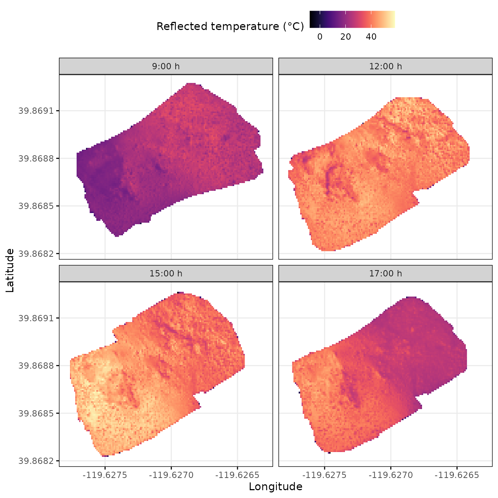

Reading and processing flights data
rnp_flights_data.RmdOverview
The goal of this vignette is to illustrate the process behind the
rnp_flights_data (read
and process flights data) function of
the throne package. This function enables to processing of
raw .tif files obtained by combining images gathered during
a flight into a data structure easily manageable in R (a tibble). This
tibble will later be related to operative temperature model
(OTM) data to finally predict thermal landscapes.
Below, we highlight the section of the package’s workflow that is
covered in this vignette:
Next, we present how the rnp_flights_data function
works, some notes on the choice of the parameter digits and
a worked-through example on how to use the function.
How the rnp_flights_data function works
The rnp_flight_data function uses the functionality
developed by package raster
to transform a .tif file into a tibble
(similar to a data.frame in R). Below we
detail the functions inputs, processing and output.
The rnp_flights_data takes in 3 inputs:
The
pathto the directory where all.tiffiles for flights are stored. The function will process all.tiffiles stored in the folder. If there are many and/or if each file is of considerable size, it will take a substantial amount of time to run. Luckily, it will only need to be ran once!A
tibbleordata.framewithmetadatafor each flight. This metadatatibblemust contain columns forflight_id, thedatewhen the flight took place (MM/DD/YYYY format), and the time of the day when the flight started and ended (time_start&time_endcolumns in HH:MM format). Below is an example metadatatibblewe include as part of the documentation of thethronepackage:
## # A tibble: 34 × 4
## flight_id date time_start time_end
## <chr> <chr> <chr> <chr>
## 1 flight01 8/24/2023 8:35 8:39
## 2 flight02 8/24/2023 8:59 9:03
## 3 flight03 8/24/2023 9:19 9:23
## 4 flight04 8/24/2023 9:42 9:46
## 5 flight05 8/24/2023 10:06 10:10
## 6 flight06 8/24/2023 10:38 10:42
## 7 flight07 8/24/2023 10:57 11:01
## 8 flight08 8/24/2023 11:20 11:24
## 9 flight09 8/24/2023 11:40 11:44
## 10 flight10 8/24/2023 12:00 12:04
## # ℹ 24 more rows- The number of decimal
digitsto which the final output should be summarized to. Specifying this parameter correctly is essential as it will dictate the spatial resolution of each of the tiles in the eventual thermal landscape. Since we believe this is an absolutely critical issue, we include a section discussing this choice in section @ref(digits) below.
To transform the original .tif files, the
rnp_flights_data function goes through the following
general steps:
Read each specified
.tiffile as a as a raster object using therasterfunction from therasterpackage.Re-project the coordinates of the raster Universal Transverse Mercator(UTM) coordinate system to a more easy to interpret World Geodetic System(WGS84) coordinate system (i.e., from a system based on UTM zones to the widely used decimal latitude and longitude degrees), using the
projectRasterfunction also from therasterpackage.Transform the raster into a
data.framevia therasterToPointsfunction once again from therasterpackage. The resultingdata.framewill have columns for longitude, latitude and IR temperature (i.e., the temperature measured by the drone) and as many rows as combinations of unique longitude and latitude values the initial.tiffile had. Each combination corresponds to a “tile” within your area of study and the area of this “tile” will be determined by the number of decimal digits of your latitude and longitude measurements as highlighted earlier.Round the number of decimal digits on all latitude and longitude observations according to the
digitsargument.Average the IR temperature across all observations with the same averaged latitude and longitude.
Add the
metadatacorresponding to that flight to the final output. Simultaneously, thedate,time_startandtime_endcolumns of the metadata file will be transformed into columns foryear, day of the year (doy), and minute of the day (mod) when the flight started (mod_start) and ended (mod_end).
NOTE: We choose working with
doyandmodto simplify the management of the data as much as possible. Date and time data have unique data formats in theRenvironment that are often difficult to handle for users and that might lead to unintended errors. By usingdoyandmod, the user deals with integer columns, much easier to operate with and manipulate. Further, these formats can be easily transformed back into more easily interpretable scales for visualization purposes, by using theas.Datefunction to transformdoy(also known as Julian date) back into a YYYY-MM-DD format and dividing by 60 formodto get hours.
The final output is a tibble object with columns for
longitude, latitude and IR-measured temperature (ir_temp).
The number of rows of this data set will vary depending on the number of
flights that are processed simultaneously, based on the area covered by
eacg flight and the number of digits specified. For
instance, our study area was ~ 2900 \(m^2\), which processed setting
digits = 5 led to a tibble of ~7500
observations per flight each representing a “tile” of approximately 0.4
\(m^2\) at a latitude of approximately
40° (See more details on the choice of the digits argument
in section @ref(digits)).
## # A tibble: 263,008 × 7
## longitude latitude ir_temp year doy mod_start mod_end
## <dbl> <dbl> <dbl> <dbl> <dbl> <dbl> <dbl>
## 1 -120. 39.9 12.5 2023 236 515 519
## 2 -120. 39.9 14.4 2023 236 515 519
## 3 -120. 39.9 14.0 2023 236 515 519
## 4 -120. 39.9 13.7 2023 236 515 519
## 5 -120. 39.9 14.6 2023 236 515 519
## 6 -120. 39.9 15.3 2023 236 515 519
## 7 -120. 39.9 14.5 2023 236 515 519
## 8 -120. 39.9 14.5 2023 236 515 519
## 9 -120. 39.9 13.9 2023 236 515 519
## 10 -120. 39.9 13.9 2023 236 515 519
## # ℹ 262,998 more rowsOnce the raw .tif file is processed, the resulting
tibble can already be used to quantify the thermal
characteristics of a study site from a spatially discrete perspective.
To illustrate this, below we plot 4 of the 34 fully processed flights
(with digits = 5) over the same area we offer in the
throne package as example data. Panel titles indicate the
hour in which the flight took place

Choosing the appropriate digits.
The argument digits determines the number of decimal
digit places to which latitude and longitude information should be
rounded to. This argument will therefore determine the spatial
resolution of your final measurement as different latitude and longitude
decimal digits correspond to different distances. As a generalization, 1
degree of latitude can be approximated to 111.32 km, a relationship that
can be extended to decimal digits as seen below.

In contrast, due to the curvature of the Earth the distance
represented by a longitude degree is also dependent on latitude. You can
find more information on how to transform degrees longitude into
distances here.
Furthermore, the proxistat
Rpackage provides helpful functions to transform coordinate
systems into measurable distances. Below we use proxistat
functions to illustrate how latitude influences the distance represented
by a longitudinal degree.
## Warning: A numeric `legend.position` argument in `theme()` was deprecated in ggplot2
## 3.5.0.
## ℹ Please use the `legend.position.inside` argument of `theme()` instead.
## This warning is displayed once every 8 hours.
## Call `lifecycle::last_lifecycle_warnings()` to see where this warning was
## generated.
Based on the above, in the majority of cases, we recommend
setting the argument digits = 5. This will provide
a spatial resolution of ~ 1.2 \(m^2\)
at the equator which will gradually descend to as little as ~ 0.5 \(m^2\) at 66° Latitude as seen below.

This spatial resolution guarantees that the original
.tif file is processed at a scale that is relevant for the
majority of study organisms for which this package is intended. However,
we leave this decision up to the user to consider the spatial scale that
is most relevant for their organism. In the image below (figure S1 in
the accompanying paper), we illustrate the same flight processed when
the argument digits is set to 4, 5 and 6 respectively.